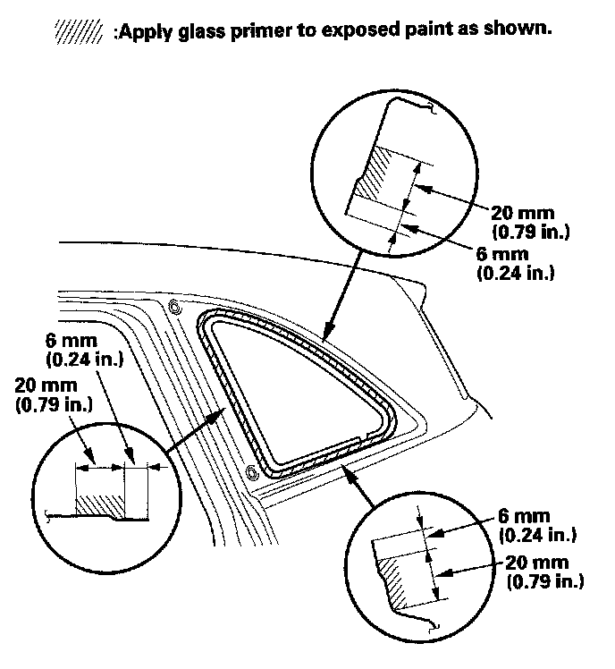

Quarter Window Glass: Service and Repair
Quarter Glass ReplacementNOTE:
- Put on gloves to protect your hands.
- Wear eye protection when removing the glass with piano wire.
- Use seat covers to avoid damaging any surface.
1. Remove the quarter pillar trim.
2. Apply protective tape along the inside and outside edges of the body. Using an awl, make a hole through the adhesive from inside the vehicle. Push a piece of piano wire through the hole, and wrap each end around a piece of wood.
3. Remove the front seal (A) from the front edge of the quarter glass (B). If necessary, cut the front seal with a utility knife.
4. Carefully cut through the adhesive (A) at the rear corner portion of the quarter glass (B) with a utility knife. With a helper on the outside, pull the piano wire (C) back and forth in a sawing motion. Hold the piano wire as close to the quarter glass as possible to prevent damage to the body, and carefully cut through the adhesive around the entire quarter glass:
- If the quarter glass will be reinstalled, take care not to damage the molding (D).
- If the molding is damaged, replace the quarter glass, molding, and clips (E) as an assembly.
- If any of the clips are broken, the quarter glass can be reinstalled using butyl tape.
5. Carefully remove the quarter glass.
6. With a putty knife, scrape the old adhesive smooth to a thickness of about 2 mm (0.08 in.) on the bonding surface around the entire quarter glass opening flange:
- Do not scrape down to the painted surface of the body; damaged paint will interfere with proper bonding.
- Remove the clips and fastener from the body.
7. Clean the body bonding surface with a sponge dampened in isopropyl alcohol. After cleaning, keep oil, grease, and water from getting on the surface.
8. If the old quarter glass will be reinstalled, use a putty knife to scrape off the old adhesive, any broken clips from the quarter glass. Clean the inside face and the edge of the quarter glass with isopropyl alcohol where new adhesive will be applied. Make sure the bonding surface is kept free of water, oil, and grease.
9. If the old quarter glass will be reinstalled (and either clip is broken off the molding), apply a light coat of primer, then apply butyl tape (A) to the molding (B) as shown. Attach the clip (C) with adhesive tape to the inside face of the quarter glass (D):
- Be careful not to touch the quarter glass where adhesive will be applied.
- Do not peel the separator off the butyl tape.
10. Attach the front seal (A) with adhesive tape (B) onto the molding (C).
11. If the old quarter glass will be reinstalled (and either clip is broken off the molding), seal the body holes with pieces of urethane tape (A). Then set the quarter glass upright in the opening, and make alignment marks (B) across the quarter glass and body with a grease pencil at the three points shown. Be careful not to touch the quarter glass where adhesive will be applied.
12. Remove the quarter glass.
13. With a sponge, apply a light coat of glass primer along the edge of the front seal (A) and molding (B) as shown, then lightly wipe it off with gauze or cheesecloth:
- With the printed dots (C) on the quarter glass (D) as a guide, apply the glass primer to the front portion of the quarter glass.
- Do not apply body primer to the quarter glass, and do not get body and glass primer sponges mixed up.
- Never touch the primed surfaces with your hands. If you do, the adhesive may not bond to the quarter glass properly, causing a leak after the quarter glass is installed.
- Keep water, dust, and abrasive materials away from primed surfaces.

14. With a sponge, carefully apply a light coat of body primer to any exposed paint or metal around the flange where new adhesive will be applied. Let the primer dry for at least 10 minutes:
- Do not apply body primer to any remaining original adhesive on the flange.
- Be careful not to mix up the body and glass primer sponges.
- Never touch the primed surfaces with your hands.
15. Cut a "V" in the end of the nozzle (A) on the adhesive cartridge as shown.
16. Pack adhesive into the cartridge without air pockets to ensure continuous delivery. Put the cartridge in a caulking gun, and run a bead of adhesive (A) around the edge of the front seal (B) and molding (C) as shown. With the glass primer (D) you applied in step 13 on the quarter glass (E) as a guide, apply the adhesive to the upper and lower corner portions of the quarter glass. Apply the adhesive within 30 minutes after applying the glass primer. Make a slightly thicker bead at each corner.
17. Use suction cups (A) to hold the quarter glass (B) over the opening, align the clips or the alignment marks (C) made in step 11, and set it down on the adhesive. Lightly push on the quarter glass until its edges are fully seated on the adhesive all the way around.
NOTE: Do not open or close the doors for an hour until the adhesive is dry.
18. Scrape or wipe the excess adhesive off with a putty knife or towel. To remove adhesive from a painted surface or the quarter glass, wipe with a soft shop towel dampened with isopropyl alcohol.
19. After the adhesive has dried, spray water over the quarter glass and check for leaks. Mark the leaking areas, and let the quarter glass dry, then seal with sealant. Let the vehicle stand for at least 4 hours after quarter glass installation. If the vehicle has to be used within the first 4 hours, it must be driven slowly.
20. Reinstall all remaining removed parts.
NOTE: Advise the customer not to do the following things for 2 to 3 days:
- Slam the doors with all the windows rolled up.
- Twist the body excessively (such as when going in and out of driveways at an angle or driving over rough,uneven roads).